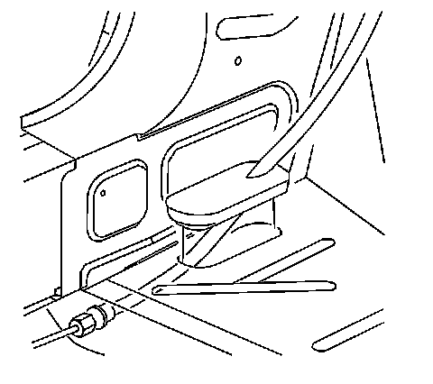
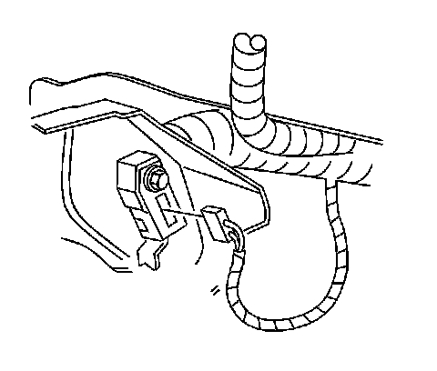
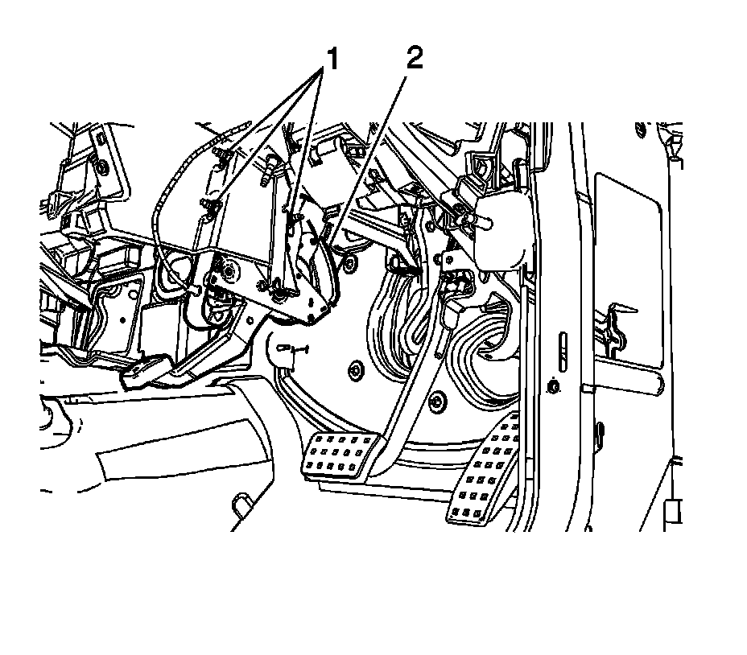
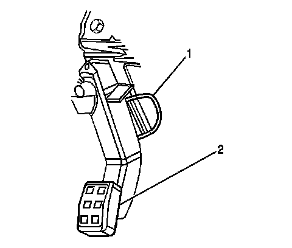

Parking Brake Lever Pedal Assembly Replacement (RHD)
Parking Brake Lever Pedal Assembly Replacement (RHD)
Removal Procedure
Important: The park brake pedal and the front park brake cable cannot be replaced separately, and must be replaced as an assembly.
1. Raise and support the vehicle. Refer to Lifting and Jacking the Vehicle (Service and Repair) .

2. Pull down on the intermediate park brake cable near the park brake connector (2).
3. Remove the front park brake cable (3) from the park brake cable connector (1).
4. Disconnect the park brake cable retainer from the floor pan by compressing the retaining tabs.
5. Lower the vehicle.
6. Remove the right knee bolster. Refer to Knee Bolster Replacement (Left Hand Drive) (Service and Repair)Knee Bolster Replacement (Right Hand Drive) (Service and Repair) .
7. Remove the park brake release handle. Refer to Parking Brake Release Handle Assembly Replacement (Parking Brake Release Handle Assembly Replacement) .
8. Remove the left front carpet retainer. Refer to Front Carpet Retainer Replacement (Service and Repair) .
9. Pull the carpet back to expose park brake cable.

10. Release the front park brake cable pass through grommet from the floor pan.

11. Disconnect the electrical connector from the park brake warning lamp switch.
12. Remove the park brake warning lamp switch wiring harness retainer from the park brake pedal assembly and position the harness out of the way.

13. Remove the park brake pedal assembly nuts (1).
14. Remove the park brake pedal and cable assembly (2) from the vehicle.
Installation Procedure
1. Install the park brake pedal and front park brake cable assembly (2) to the instrument panel carrier.
Notice: Refer to Fastener Notice (Fastener Notice) .
2. Install the park brake pedal assembly nuts (1).
Tighten the nuts to 25 N.m (18 lb ft).
3. Connect the electrical connector to the park brake warning lamp switch.
4. Install the park brake warning lamp switch wiring harness retainer to the park brake pedal assembly.
5. Install the front park brake cable pass through grommet to the floor pan.
6. Install the front floor carpet.
7. Install the left front carpet retainer. Refer to Front Carpet Retainer Replacement (Service and Repair) .
8. Raise the vehicle.
9. Install the park brake cable retainer to the floor pan by pulling the park brake cable retainer into place.
10. Connect the front park brake cable (3) to the park brake cable connector (1).
11. Lower the vehicle.
12. Install the park brake release handle. Refer to Parking Brake Release Handle Assembly Replacement (Parking Brake Release Handle Assembly Replacement) .

13. If a new park brake pedal assembly is being installed, the cable tension set pin has to be removed to set the cable tension.
14. To set the park brake cable tension, rotate the pin (1) forward then rotate the pin to the left.
15. Remove the pin.
16. Apply the park brake pedal (2) 3 full cycles to complete the tension set.
17. Install the right knee bolster. Refer to Knee Bolster Replacement (Left Hand Drive) (Service and Repair)Knee Bolster Replacement (Right Hand Drive) (Service and Repair) .